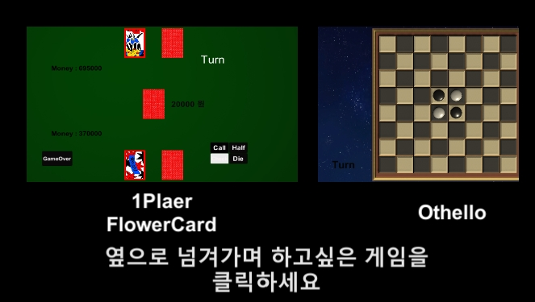
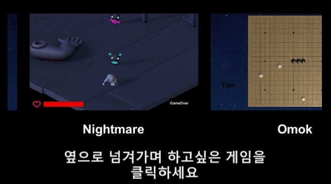

안녕하세요~
이채은 입니다. 포트폴리오로 어떤 걸 만들까 고민을 하다가 여러 보드게임과 FPS게임을 만들어봤는데요.
그럼 지금 부터 어떤 기술과 과정으로 이 게임이 만들어 졌는지 하나하나 확인해 볼게요!!
일단 게임을 시작하면 첫 화면으로 Fade in, out 기술을 이용해 로고가 뜨고, Scroll View로 4가지 게임 버튼을 만들었어요.
 
이제 게임 하나하나 알아 보러 갈게요. 밑에 버튼을 하나씩 눌러서 봐주세요~
Omok
뽀
오늘 공부한 내용